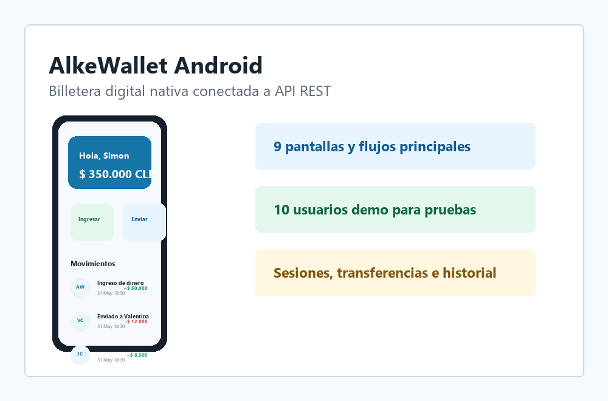
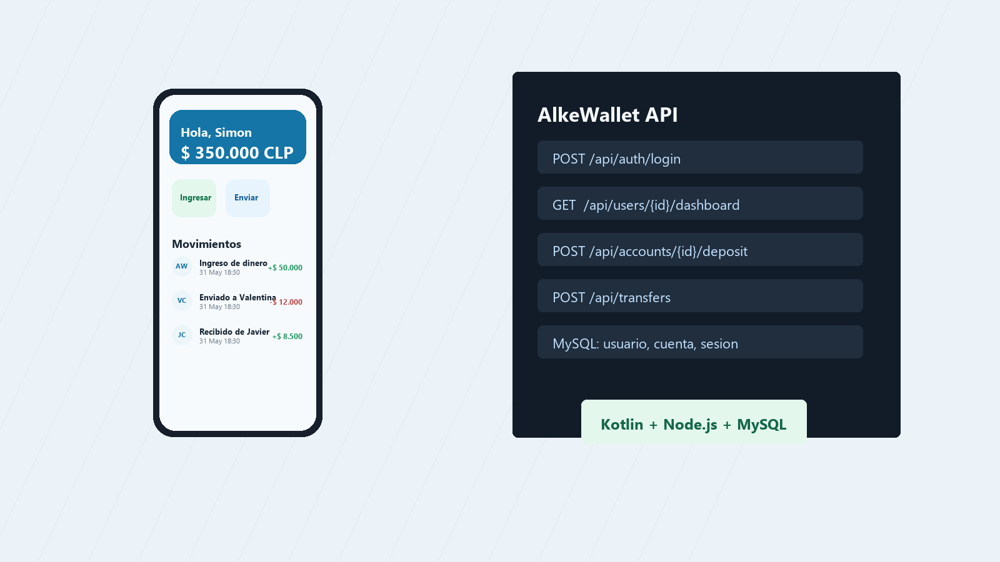
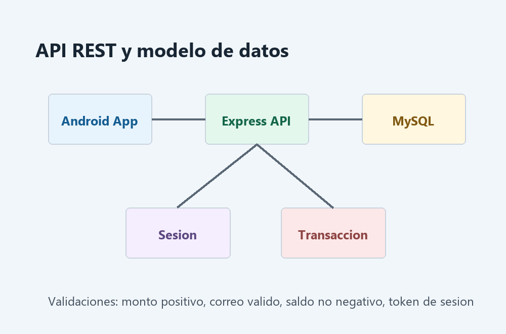
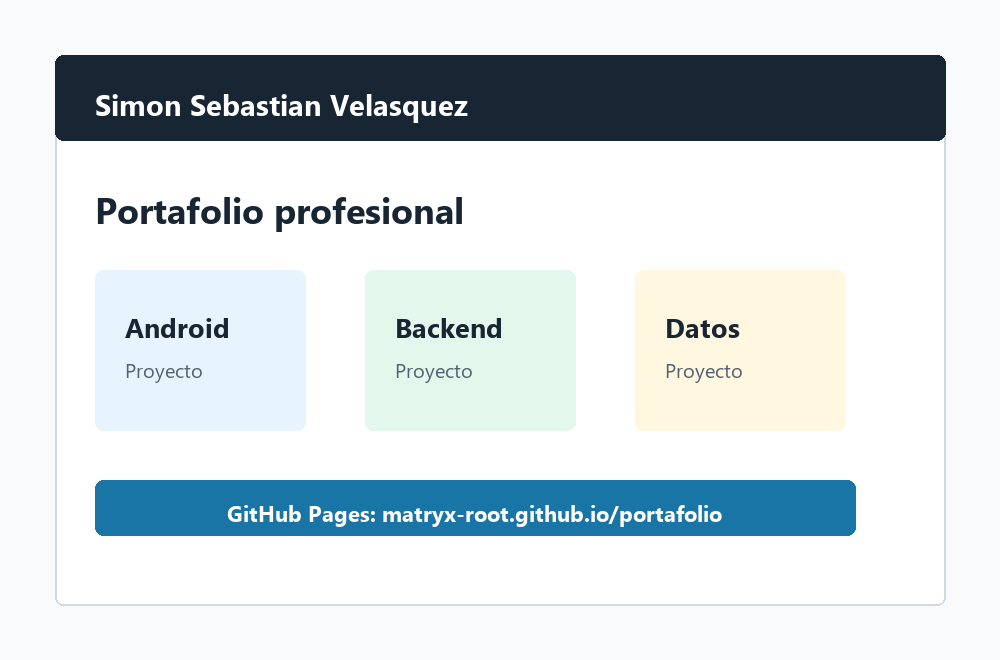

Android
AlkeWallet Android
Aplicacion nativa de billetera digital con registro, login, saldo, ingreso de dinero, transferencias e historial de movimientos.
Ver repositorio
Portafolio tecnico Android
Desarrollador Android trainee orientado a crear productos moviles funcionales, conectados a servicios REST y respaldados por datos relacionales.
Perfil profesional
Mi foco esta en construir aplicaciones Android claras, documentadas y probables. En AlkeWallet aplique Kotlin, XML Layouts, una API REST en Node.js/Express y persistencia en MySQL para convertir una interfaz movil en una solucion funcional.
Evidencia tecnica

Android
Aplicacion nativa de billetera digital con registro, login, saldo, ingreso de dinero, transferencias e historial de movimientos.
Ver repositorio
Backend
Servicio local para autenticacion, sesiones, dashboard, depositos y transferencias con persistencia relacional.
Ver backend
Web
Sitio profesional publicado con GitHub Pages para presentar perfil, proyectos, caso de estudio y canales de contacto.
Ver publicacionCaso de estudio
El desafio fue transformar una aplicacion de interfaz en una billetera digital con datos reales, control de sesion y operaciones persistentes. La solucion debia ser entendible para el usuario y revisable tecnicamente por otra persona.
Implemente una arquitectura simple por capas: Android para la experiencia movil, API REST para reglas de negocio y MySQL para usuarios, cuentas, sesiones y transacciones. El proyecto incluye scripts SQL, clientes demo y documentacion de ejecucion.
El proyecto fortalecio mi comprension de integracion cliente-servidor, normalizacion de datos, manejo de errores, seguridad basica y comunicacion tecnica mediante README y evidencia de pruebas.
Stack y forma de trabajo
Kotlin, Android Studio, XML Layouts, Activities, navegacion, estado local y consumo HTTP.
Node.js, Express, endpoints REST, validaciones, sesiones y manejo de errores.
MySQL, Workbench, claves foraneas, restricciones, vistas y normalizacion inicial.
Pruebas unitarias, casos limite, documentacion README, Git, GitHub y mejora continua.
Proyeccion laboral
Me interesa una empresa donde productos moviles, pagos digitales, datos e infraestructura se combinan para resolver problemas reales a escala regional. Mi objetivo es crecer como perfil junior aportando claridad, aprendizaje rapido y trabajo documentado.
Contacto
Este portafolio resume mi trabajo practico en desarrollo Android, backend local y bases de datos. Estoy abierto a seguir aprendiendo, colaborar en equipo y fortalecer productos digitales reales.